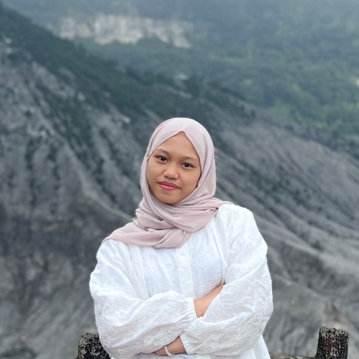

Sylda Frizqia Qiftiyani Putri
Anak PertamaTentang Sylda
- 👤Nama LengkapSylda Frizqia Qiftiyani Putri
- 📍Tempat / Tanggal LahirBelum diisi
- 👪StatusAnak pertama dari Tri Waluyo & Siti Umiyati
- 🎓PendidikanMahasiswi Teknik Informatika
- 🚀Cita-citaMenjadi Software Engineer di perusahaan teknologi dunia
Hobi & Minat
Game online
Coding website
Musik lo-fi
“Satu baris kode hari ini, satu langkah menuju mimpi.”